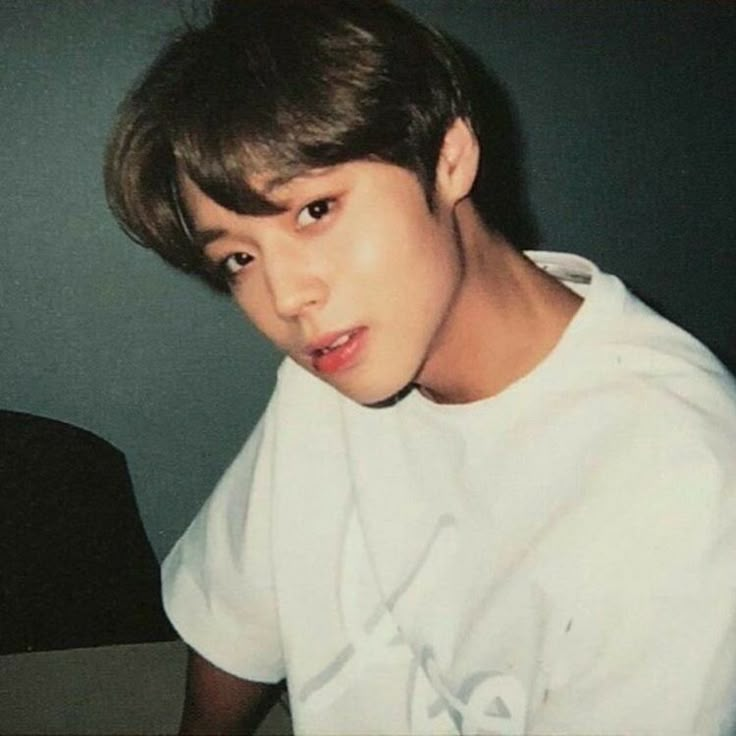

Name: Park Ji-hoon
Birthdate: May 29, 1999
Birthplace: Masan, South Korea
Nationality: Korean
Height: 173 cm (5'8")
Blood Type: AB
Fandom Name: MAY
Instagram: 0529.jihoon
Career Highlights
Pre-debut: Started as a child actor in musicals (Peter Pan) and television dramas (Jumong).
Wanna One (2017–2019): Gained massive popularity, ranking 2nd on Produce 101 Season 2.
Soloist (2019–present): Debuted as a solo artist on March 26, 2019.
Acting: Won Best New Actor for Weak Hero Class 1 (2023) and recognized for Love Song for Illusion
← Back